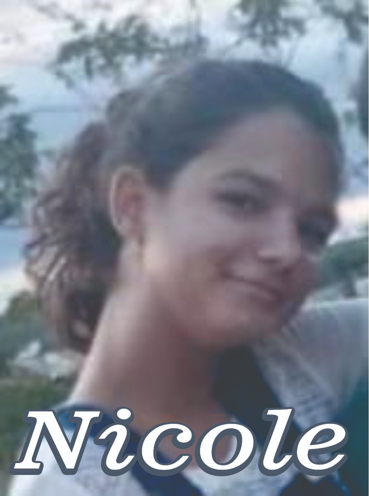

Gildésia Caires Pereira (Déu)
Professora dos anos iniciais;
Atualmente ajustada na Biblioteca da EE Professora Dora Barbosa:
Faz a função de bibliotecária;
E outras atividades.
Esposo
Filha(o)

Reside atualmente em São João do Paraíso-Mg.